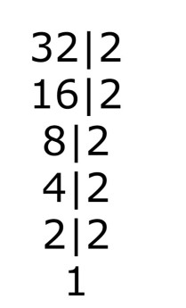

Logaritmo é uma função matemática que está baseada nas propriedades da potenciação e exponenciação. O valor
do logaritmo corresponde ao expoente que se deve elevar uma determinada base, positiva e diferente de 1,
para que o resultado seja igual a um número positivo b.
Definição
a → base
b → logaritmando
x → logaritmo
➟ Exemplo: log2 32 (A qual expoente devemos elevar o 2 (base) para que resulte 32 (logaritmando);
Resposta: 5 (2.2.2.2.2 = 32). Podemos solucionar os logaritmos simplesmente fatorando o logaritmando que
nesse caso é o 32:

➟ R: 2^5 = 32
➟ Depois de fazer os exercícios, chegamos a algumas conclusões: o logaritmo pode ser transformado em uma
equação
exponencial; o logaritmo deve ser b > 0; a base deve ser a > 0 e a ≠ 1;
➟ Consequências da definição:
⸰Logaritmo de qualquer base (a), com logaritmando (b) igual a 1 será 0. Exemplo: log3 1 = 0, porque
3^0 = 1;
⸰Quando a base e o logaritmando são iguais, o resultado do log é 1. Exemplo: log6 6 = 1, porque 6^1 =
6;
⸰ Quando a base e o logaritmando são iguais e o logaritmando está elevado a uma potência (n), o log
vai ser o expoente que b está elevado. Exemplo: log3 3^5 = 5;
⸰A potência de base (a) e expoente logab será igual a b, ou seja alogab = b;
⸰ Quando dois logaritmos com mesma base são iguais, os logaritmandos também serão iguais: loga b =
loga c ⇔ b = c;
➟ Propriedades Logaritmicas:
⸰ Logaritmo de um produto: é a soma de seus logaritmos: Loga (b.c) = Loga b + loga c;
⸰ Logaritmo de um quociente: é a diferença dos logaritmos: Loga (b/c) = Loga b - Loga c;
⸰ Logaritmo de uma potência: é o produto dessa potência pelo logaritmo: Loga b^m = m . Loga b;
⸰ Mudança de base: para mudar a base é só usar a relação: logbc = logac/logab;